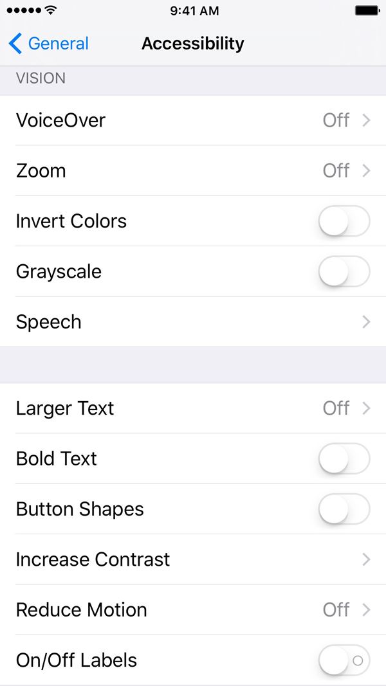

Accessibility
iOS offers an inexpensive, but powerful, Multi-Touch solution for people with disabilities. Accessibility features that require no additional software or cost include the following:
- VoiceOver: Describes aloud what is currently on the Multi-Touch display and allows visually impaired users to make calls, use applications, and read email, webpages, and the user interface.
- Zoom: Adjusts the magnification level of the entire screen, so you can adjust the amount of zoom to meet your needs.
- Alternate Color Scheme: You can invert the colors on the display, or switch to a grayscale theme, for improved visibility.
- Speak Selection: A speak button will appear when text is selected.
- Speak Auto-text: Speaks text corrections and suggestions iPhone makes while you type.
- Text options: You can make text larger or bolder, or increase the contrast of the entire display.
- Guided Access: You can lock a user into using a certain app, requiring a gesture, passcode, or Touch ID to exit.
Enable accessibility features from Settings > General > Accessibility.

iOS 9 Accessibility
Additional accessibility information is available in the following resources: